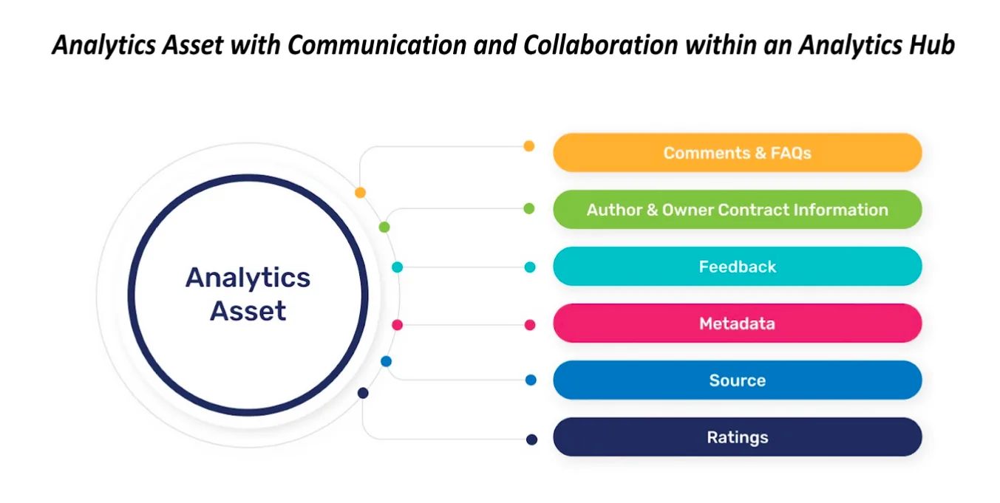

The understanding and interpretation of data is not always self-evident. Analytics assets such as reports, dashboards, and visualizations require at least a basic level of data and analysis skills as well as some understanding of the content in order to properly interpret the information and make decisions.
When people have questions about the content within an asset, they usually turn to their immediate colleagues, the report producer, or the owner to seek answers. Yet all too often, the same questions keep arising, or there becomes a pattern of misunderstanding, perhaps because people forget the answers to their questions, or they don’t understand them in the first place. This creates inefficiencies and adversely affects productivity and decision-making, which are hidden costs that compound with the growth of an organization.
Establishing a process of collaboration that documents the communications helps prevent recurring questions and creates efficiencies over time. According to Gartner, “Collecting different perspectives on data to establish a cohesive understanding is critical for decision-making. Data and analytics leaders must introduce collaboration capabilities to achieve analytics democratization.” (1)
Issues Created by Existing Methods of Communication and Collaboration
When people share an analytics asset, they often do so by attaching the document to an email, providing a link in an email message, or uploading the asset to a collaboration tool such as Slack. Often a thread of communication is created when people ask questions or share insights about the analytics assets.
While the communication and collaboration may be meaningful, the analytics asset becomes nested and buried in the thread of responses. Also, recalling the communication based on a particular analytics asset is an exercise in remembering the topic and then searching and hunting for the information that you are seeking.
These methods prioritize communication and not the analytics asset.

Analytics Collaboration Through an Analytics Hub Platform
Unlike email or collaboration tools where the focus is on communication and the analytics asset is an artifact that gets buried in the thread of responses, analytics collaboration through an Analytics Hub prioritizes the analytics asset and combines the communication threads.
Designed to increase the contextual value of each analytics asset, the Analytics Hub creates a unified view of all the assets and their associated metadata—including comments and other collaborative properties. The focal point is the analytics asset itself, and individuals can increase the understanding and value of that asset by rating it, posting comments, and providing feedback.
In this manner, the important discussions and context about the analytics asset are captured and are easily accessible whenever a particular analytics asset is viewed. (For more information on Analytics Hub components including collaboration, analytics catalog, and BI Portal, read “Analytics Hub: A Single Source for Trusted Enterprise Analytics Assets.”)
“Collaboration is about the application of collaborative capabilities to analytics workstreams for organizations that want to provide an environment where a broad spectrum of users can simultaneously co-produce an analytics project, bringing insights into action,” according to Gartner. (2)

Three Benefits of Analytics Collaboration in an Analytics Hub
1. Increased Understanding: While each analytics asset has a name, the name by itself is typically not descriptive enough to provide anyone with an understanding of the content. Further, additional contextual information rarely accompanies the asset to describe the content, relevant business rules, metadata, parameters for appropriate use of the information, and business owner or subject matter expert.
For example, in looking at a report called “Sales by Customer,” one would think it would be a listing of customers and the corresponding sales that were made to each customer. Upon further thought, one may have questions such as:
- Does the sales figures account for products and services?
- Are the amounts gross sales or net sales?
- If it’s net sales, does it include discounts, promotions, and one-time offers?
- Are returns accounted for in the sales figures?
In an analytics hub, this information can be provided and connected with the report itself, eliminating the need for each viewer to wonder and seek answers to the same set of questions. Any subsequent questions can collaboratively be explored (asked, pondered, and answered) and preserved alongside the asset. This yields greater clarity and understanding for everyone who views that analytics asset.
2. Improved Analysis: Analytics collaboration functionality within an analytics hub provides individuals an understanding of the content and associated business rules related to an analytics asset and gives them the ability to then determine how best to use the information.
Using the same prior example, if the “Sales by Customer'' report contains data that is sourced from the organization’s accounting system, it will contain information that will also be reflected in financial reports used by management. If there is another report called “Customer Sales” that is sourced from the organization’s sales force automation (SFA) system, it will contain information that the sales group uses to track customer sales.
However, the definition of a sale may be different between the accounting and the SFA systems. The accounting system will recognize a sale when there is a fully signed agreement and the product or service has been delivered. The sales force automation system will recognize a sale when there is a fully signed agreement, regardless of whether or not the product or service has been delivered. The difference can be significant.
Knowing the difference between “Sales by Customer” and “Customer Sales'' reports will improve analysis because there is a greater understanding of the content that is being examined.
3. Better Decision-Making: Making the best possible decision rests with the information that is being used. If one does not have a full understanding of the information being examined, then the analysis will be off. If the analysis is off, the best possible decision may not be made. So, producing better decisions requires an understanding of the information being examined—which includes the context of the data, the business rules being applied, the source of the data, and the perspectives of other individuals who have used the analytics asset. With a greater understanding of the information, the analyses are improved because individuals have an appropriate contextual appreciation for data within the analytics asset and how it should be best used.
Conclusion
The ability to share understanding and perspectives helps to provide context to the information that is being examined. Analytics collaboration facilitates the ability to provide understanding by gathering ratings, feedback, comments, metadata, sourcing, and other relevant information and combining it with each analytics asset within an analytics hub. Preserving this contextual information alongside the asset allows consistency and efficiency in analysis—without having to rehash questions that have already been addressed.
As a result, analysis, interpretation, and decision-making are improved because an increased level of common understanding is easily delivered and accessible.
References:
1) Sun, J., Pidsley D, (2 September 2022 - ID G00759403) Innovation Insight: Analytics Collaboration (Gartner Inc.)
2) Sun, J., Quinn, K., Pidsley, D., O’Callaghan, G., Ganeshan, A., Long, C., Schulte, W., Popa, A., Macari, E., Fei, F., Schlegel, K., Misclaus, R., Antelmi, J., (17 April 2023 - ID G00772210) Critical Capabilities for Analytics and Business Intelligence Platforms (Gartner Inc.)